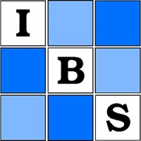

IBS Tanzania Workshop
August 01-05, 2022
Statistical Learning Using R. CUHAS, Mwanza
Statistical Learning Using R. CUHAS, Mwanza
| Home | Registration | Program | Directions | Flyer |
The IBS Tanzania region aims to conduct a series of workshops on Statistical learning with application in R, which will increase efficiency in the correct use of statistical methods in routine data generated across LMICs. The workshops will be streamlined from general(ized) linear models to advanced statistical learning methods and applications.
The call for the first workshop in this series is now open.
By the end of these series of workshops, participants are expected to:
IBS Tanzania encuourages attendance by statisticians with diverse academic and professional background, united by the thirst to learn using OpenSource statistical software R in routine statistical analysis.
This workshop is made possible by the financial sponsorship of the International Biometrics Society (IBS), the technical and logistic partners are hereby acknowledged.
| Innocent Mboya | Jim Todd | |
| Financial sponsor | IBS Tanzania President | IBS Tanzania Patron |
|  |

|

|